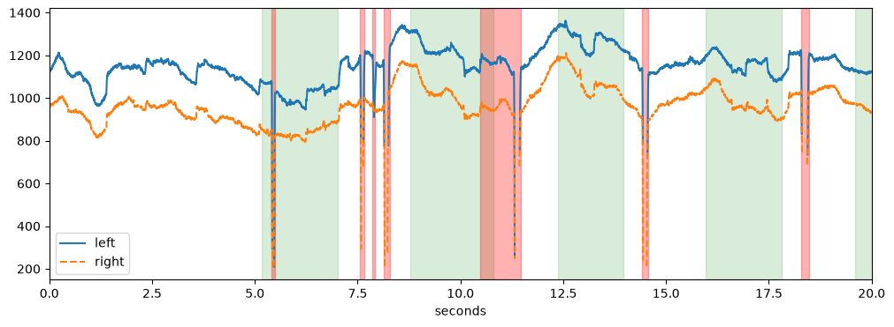
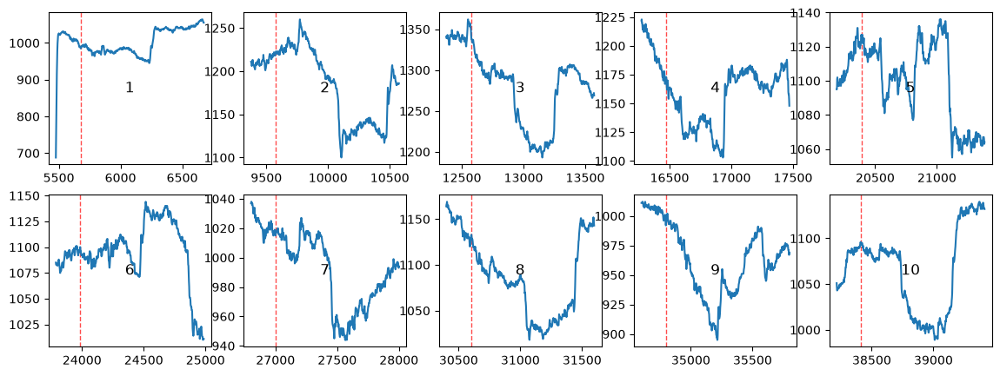

Intervals#
Many analyses look at stretches of data rather than single time points: the second after a stimulus, the time between trial start and response, blinks, or periods with bad data. In pypillometry, such stretches are stored as Intervals, a list of (start, end) pairs with their units and, if they belong to events, the event labels.
This tutorial shows where intervals come from, how to change and combine them, and how to use them in an analysis.
[1]:
import pypillometry as pp
from pypillometry import u
import numpy as np
import matplotlib.pyplot as plt
pp.logging_set_level("WARNING")
d = pp.get_example_data("rlmw_002_short")
Intervals around events#
get_intervals() creates one interval for each selected event. The first argument selects the events (a string contained in the label, a function, or an Events object; see the Events tutorial). The second gives the window relative to the event onset, here from 200 ms before until 1000 ms after each stimulus:
[2]:
stim = d.get_intervals("S_", (-200, 1000) * u.ms)
stim
[2]:
Intervals 'S_' | 10 intervals (total duration: 12000.00 ms), 1200.00 ms +/- 0.00 ms, [1200.00 ms, 1200.00 ms] | fs=500.0Hz
as_pandas() shows the intervals as a table, together with the events they belong to:
[3]:
stim.as_pandas().head()
[3]:
| start | end | duration | units | event_label | event_index | event_onset | |
|---|---|---|---|---|---|---|---|
| 0 | 5477.0 | 6677.0 | 1200.0 | ms | S_1_1_5 | 1 | 5677.0 |
| 1 | 9375.0 | 10575.0 | 1200.0 | ms | S_2_6_2 | 5 | 9575.0 |
| 2 | 12374.0 | 13574.0 | 1200.0 | ms | S_3_2_1 | 9 | 12574.0 |
| 3 | 16273.0 | 17473.0 | 1200.0 | ms | S_4_4_1 | 13 | 16473.0 |
| 4 | 20188.0 | 21388.0 | 1200.0 | ms | S_5_3_5 | 17 | 20388.0 |
Warning: Give the window with units, e.g. (-200, 1000) * u.ms, or pass units="ms". Plain numbers without units are taken as sample indices. At 500 Hz, (-200, 1000) means 400 ms before until 2000 ms after the event.
[4]:
d.get_intervals("S_", (-200, 1000)) # sample indices!
[4]:
Intervals 'S_' | 10 intervals (total duration: 12000.00 indices), 1200.00 indices +/- 0.00 indices, [1200.00 indices, 1200.00 indices] | fs=500.0Hz
Intervals between two events#
With a tuple of two selectors, each interval spans from one event to the next matching event. Here, from the start of each trial (F events) to the feedback (R events). The window (0, 0) means “exactly from the first to the second event”; other values extend or shorten the span:
[5]:
trials = d.get_intervals(("F_", "R_"), (0, 0) * u.ms)
trials.as_pandas().head(3)
[5]:
| start | end | duration | units | event_label | event_index | event_onset | |
|---|---|---|---|---|---|---|---|
| 0 | 5177.0 | 7010.0 | 1833.0 | ms | F_1_to_R_1_15 | 0 | 5177.0 |
| 1 | 8776.0 | 10808.0 | 2032.0 | ms | F_2_to_R_2_20 | 4 | 8776.0 |
| 2 | 12374.0 | 13957.0 | 1583.0 | ms | F_3_to_R_3_18 | 8 | 12374.0 |
stats() summarizes the durations:
[6]:
trials.stats()
[6]:
{'n': 10,
'mean': np.float64(1791.1),
'sd': np.float64(219.8792623236671),
'min': np.float64(1333.0),
'max': np.float64(2033.0),
'total_duration': np.float64(17911.0),
'units': 'ms'}
Other sources of intervals#
Detection methods return their results as intervals. For example, pupil_blinks_detect() with apply_mask=False (the default) returns one Intervals object per eye and variable without masking the data, so you can check them first:
[7]:
blinks = d.pupil_blinks_detect()
blinks["left_pupil"]
[7]:
Intervals 'left_pupil_blinks' | 14 intervals (total duration: 1520.00 indices), 108.57 indices +/- 118.24 indices, [24.00 indices, 492.00 indices] | fs=500.0Hz
Blinks stored in the object can be retrieved with get_blinks(), and masked samples with mask_as_intervals(). You can also create intervals directly:
[8]:
pp.Intervals([(1, 2), (5, 7.5)] * u.sec, label="bad data")
[8]:
Intervals 'bad data' | 2 intervals (total duration: 3.50 sec), 1.75 sec +/- 0.75 sec, [1.00 sec, 2.50 sec]
Units#
to_units() converts intervals to other time units. Intervals in sample indices (units=None) can be converted as well, because they know the sampling rate:
[9]:
trials.to_units("sec").as_pandas().head(3)
[9]:
| start | end | duration | units | event_label | event_index | event_onset | |
|---|---|---|---|---|---|---|---|
| 0 | 5.177 | 7.010 | 1.833 | sec | F_1_to_R_1_15 | 0 | 5.177 |
| 1 | 8.776 | 10.808 | 2.032 | sec | F_2_to_R_2_20 | 4 | 8.776 |
| 2 | 12.374 | 13.957 | 1.583 | sec | F_3_to_R_3_18 | 8 | 12.374 |
Changing intervals#
The following methods return new Intervals and leave the original unchanged.
filter() keeps intervals by duration, time range or a function of (start, end). Here, the trials that took longer than 1.8 seconds:
[10]:
trials.filter(min_duration=1.8 * u.sec)
[10]:
Intervals 'F__to_R_' | 7 intervals (total duration: 13445.00 ms), 1920.71 ms +/- 88.30 ms, [1800.00 ms, 2033.00 ms] | fs=500.0Hz
pad() extends each interval. For blinks, this is useful because the samples just before and after a blink are often distorted:
[11]:
left = blinks["left_pupil"].to_units("ms")
left.pad(50 * u.ms, 100 * u.ms).as_pandas().head(3)
[11]:
| start | end | duration | units | |
|---|---|---|---|---|
| 0 | 5358.0 | 5596.0 | 238.0 | ms |
| 1 | 7512.0 | 7764.0 | 252.0 | ms |
| 2 | 7814.0 | 8012.0 | 198.0 | ms |
merge() combines intervals that overlap (or are closer than distance):
[12]:
print(len(left), "->", len(left.merge(distance=200 * u.ms)))
14 -> 12
Combining intervals#
+ (or pp.merge_intervals() for many at once) puts the intervals of two objects together. For instance, the blinks of both eyes. Overlapping intervals are kept separate until you call merge():
[13]:
both_eyes = pp.merge_intervals(blinks["left_pupil"], blinks["right_pupil"])
both_eyes = both_eyes.to_units("ms").merge()
both_eyes
[13]:
Intervals 'merged' | 15 intervals (total duration: 3480.00 ms), 232.00 ms +/- 232.02 ms, [48.00 ms, 984.00 ms] | fs=500.0Hz
- removes the parts of one set of intervals that overlap with another. Here, the parts of each trial without blinks in either eye:
[14]:
clean_trials = trials - both_eyes
clean_trials.as_pandas().head()
[14]:
| start | end | duration | units | |
|---|---|---|---|---|
| 0 | 5176.0 | 5408.0 | 232.0 | ms |
| 1 | 5496.0 | 7010.0 | 1514.0 | ms |
| 2 | 8776.0 | 10484.0 | 1708.0 | ms |
| 3 | 12374.0 | 13956.0 | 1582.0 | ms |
| 4 | 15972.0 | 17822.0 | 1850.0 | ms |
Trials with a blink are split into several pieces.
Plotting intervals#
plot() draws the intervals on a time line, and plot_highlight() shades them in an existing plot. Make sure the intervals are in the same units as the plot. Here, trials are green and blinks red:
[15]:
plt.figure(figsize=(12, 4))
d.plot.pupil_plot(plot_range=(0, 20) * u.sec, show_blinks=False,
show_events=False)
trials.to_units("sec").plot_highlight(color="green", alpha=0.15)
both_eyes.to_units("sec").plot_highlight(color="red", alpha=0.3)
plt.xlim(0, 20);

d.plot.plot_intervals() shows the data in each interval in a small plot of its own, e.g., to check every blink (for blinks, plot_blinks() does the same):
[16]:
d.plot.plot_intervals(stim, eyes="left",
variables="pupil", nrow=2, ncol=5, figsize=(14, 5));

Using intervals#
Intervals are the input for many methods of the data objects.
Masking and interpolating: mask_intervals() marks the samples in the intervals as invalid, interpolate_intervals() replaces them by interpolated values. Here we mask the padded blinks in the pupil data:
[17]:
d2 = d.mask_intervals(both_eyes.pad(50 * u.ms, 100 * u.ms),
variables="pupil", inplace=False)
d2.data.count_masked()
[17]:
2791
One value per interval: stat_per_event() applies a function to the data in each interval, e.g., the mean pupil size after each stimulus:
[18]:
d2.stat_per_event(intervals=stim, variables="pupil")
[18]:
{'left_pupil': array([1002.94259259, 1188.40377358, 1281.70833333, 1160.47666667,
1100.505 , 1095.75166667, 993.23 , 1113.16718266,
963.95833333, 1065.60833333]),
'right_pupil': array([ 830.77222222, 977.68490566, 1095.90166667, 969.76 ,
916.80833333, 920.42333333, 843.105 , 932.6996904 ,
808.225 , 889.535 ])}
Segments: get_segments() cuts the data in each interval into a SegmentedEyeData object, the basis for event-related pupil dilations (see the ERPD tutorial):
[19]:
d2.get_segments(stim, "left_pupil")
[19]:
SegmentedEyeData — S_
![Mean signal]()
Masks and intervals#
Intervals can be converted to a boolean mask with one entry per sample, and back. Use units=None (sample indices) for this:
[20]:
mask = both_eyes.to_units(None).to_mask(len(d))
print(mask.shape, mask.sum(), "samples in blinks")
pp.Intervals.from_mask(mask, units="ms", sampling_rate=d.fs)
(20465,) 1740 samples in blinks
[20]:
Intervals | 15 intervals (total duration: 3480.00 ms), 232.00 ms +/- 232.02 ms, [48.00 ms, 984.00 ms] | fs=500.0Hz